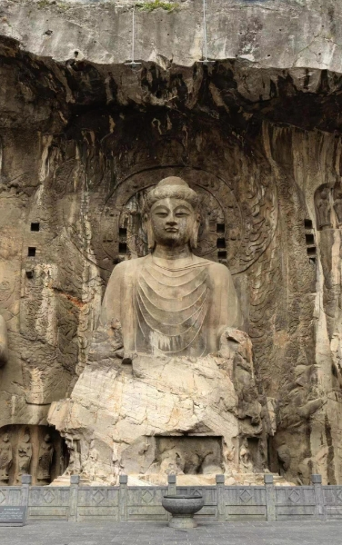

丨业余爱好
读书
人一生就是一条路，在这条路上的跋涉痕迹成为我们每个人一生的轨迹，此路不可能走第二次，而在人生的道路上，我们所见的风景是有限的。书籍就是望远镜，书籍就是一盏明灯，让我们看得更远、更清晰。
追番
一般我们说的追剧是指真人拍摄的电视连续剧，而“番”指的是“番剧”。“番剧”是一个外来语词汇，意思为连载动画电视剧，属于二次元用户常用语。通常日本每年有四季动画剧，集中在1月、4月、7月、10月的某一个月份播出。

旅游
旅游是结合自己的喜好，主动挖掘尚未熟知的目的地，获得更独特的体验。旅游是一种情绪消费，远离居住地的旅游愈发成为人们舒缓心境、重获力量的重要目的。旅行偏重于行，旅游不但有“行”，且有观光、娱乐含义。
听音乐
音乐对身体健康的好处 保持心脏健康 研究表明，播放音乐时血液更容易流动。它还可以降低心率、降低血压、降低皮质醇（应激激素）水平并增加血液中的血清素和内啡肽水平。调节你的心情，让你快乐和放松。
打游戏
它是一种基于物质需求满足之上的，在一些特定时间、空间范围内遵循某种特定规则的，追求精神世界需求满足的社会行为方式，但同时这种行为方式也是哺乳类动物或者灵长类动物所需的一种降压排解的方式。

干饭
我爱吃饭，吃饭爱我。我爱吃饭，吃饭爱我。我爱吃饭，吃饭爱我。我爱吃饭，吃饭爱我。我爱吃饭，吃饭爱我。我爱吃饭，吃饭爱我。我爱吃饭，吃饭爱我。我爱吃饭，吃饭爱我。我爱吃饭，吃饭爱我。我爱吃饭，吃饭爱我。